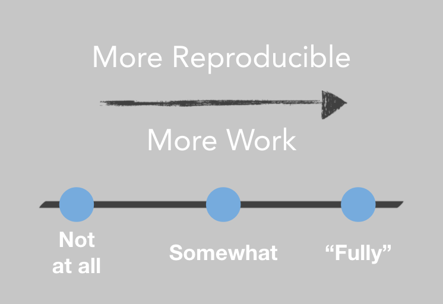
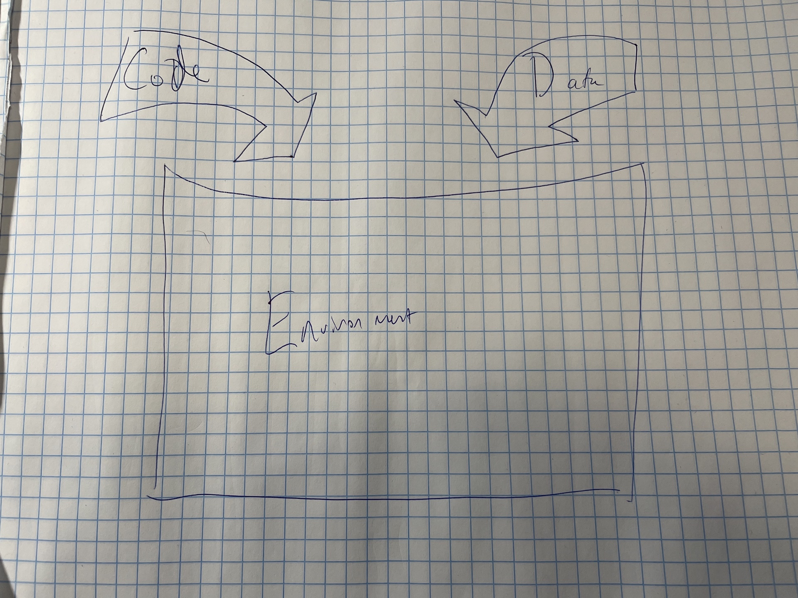
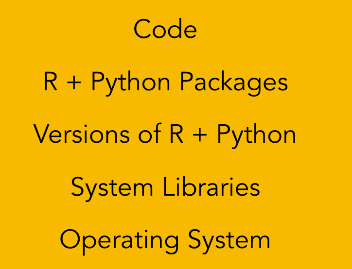
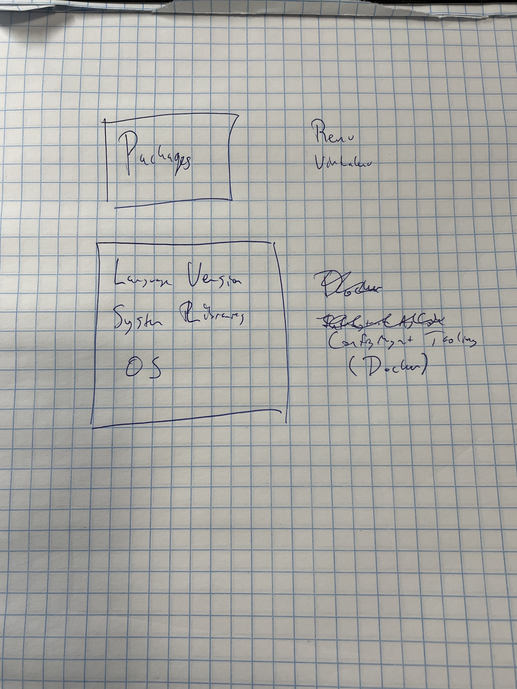

3 Environments and Reproducibility
Reproducibility in data science is hard.
But it’s also important.
In data science, we’re usually either trying to discover something new about the world, or to make a prediction that will prove useful in the future. Our results being reproducible is an important part of assuring that’s the case.
There are lots of code-based strategies – like literate programming – that ensure the reproducibility of our code, and various tools to make sure we can reproduce the dataset we ran the code on. Those tools and techniques are outside the scope of this book. In this book, we’re going to talk about how to make an environment that is reproducible.
It’s worth saying that reproducibility isn’t binary – it’s a spectrum. There are things that are fully irreproducible, like an analysis that relies on a random number generator with no seed set. In that case, you will never be able to reproduce your earlier results. Going from that to setting a seed is the very lowest level of reproducibility.
And while it might be tempting to say that you should always maximize reproducibility, there’s generally a tradeoff – making things more reproducible is also generally more work.

Depending on your organization, you may have reproducibility requirements. In highly-regulated industries, these may actually be legal or regulatory requirements you have to meet and it might be worth it for your organization to undertake a significant hassle or cost to ensure reproducibility.
In other cases, you’re just trying to make sure you can be confident in and verify your results later. In that case, there’s probably a lower amount of resources available – and lower requirements – in terms of how reproducible it’s worth making things.
3.1 The Environment
The example above talked about reproducibility as a function of what you did in your code – did you bother to set a seed for your random number generator or not?
But for the purpose of this chapter, that’s the last we’re going to talk about code reproducibility. Instead, we’re going to discuss re-creating the environment. You might well ask: well, what is the environment?
For the purposes of data science, I think of everything that isn’t code you’ve written or the data you’re using. The environment is the mixing bowl where those two things meet to do your work. In a lot of cases, data scientists can get away without thinking about the environment…at least for a while.

Often, you’ve got an environment, probably on your laptop, where things work well enough. The problem comes later. Sometimes this comes up when collaborating on a piece of work – how many times have you told a collaborator, “Well, it works on my machine…” Other times it comes up when you get to think about taking an app or report into production – thinking about how to make sure your app or report will reliably run for an extended period of time. And sometimes it comes up in the context of archiving what you’re doing - if you need to re-run this later to verify results, are you confident that it will run cleanly and return the same results.
As I said above, there is no perfect answer to reproducing an environment, but there are some general considerations to keep in mind, and a few tools and strategies I’ve found that are useful.
In computational terms, the environment is everything that isn’t the code or data themselves. There are layers of environment, one atop the other, right down to the physical hardware.
[TODO: redo graphic as layers, add hardware]

Again, depending on your requirements, there may be different answers to your reproducibility issues. In almost all cases, it’s worthwhile to make sure you can easily reproduce your language and package environments. This can solve a lot of headaches down the road, and I recommend it in almost all cases that aren’t just a one-off quick analysis (and sometimes even then!).
But there are also highly-regulated industries where you have to ensure the reproducibility of results down to the level of hardware-specific machine instructions and your version of reproducibility might involve just keeping hardware running for a decade to make sure the environment is truly and completely reproducible.
3.2 Two Layers of Environment Management
In most cases, you won’t have to persist your physical hardware – and if you’re in the cloud that’s not really even an option. In that case, I generally recommend two “layers” of tooling to ensure environmental reproducibility.

If you need to maintain your hardware, that’s beyond the scope of this book. But I am going to suggest two sets of tools for managing the R and Python package environments you might have, as well as the underlying versions of R and Python, the system libraries, and the operating system.
3.2.1 Reproducing Package Environments
For data science projects, it’s generally worth using a language-specific tool to manage the set of packages you want in your environment. In R, {renv} is the standard on this front. In Python, there are many different options. In the context of production data science, I recommend {virtualenv}/{venv} and related tools.
A sidebar on Conda
Many data scientists love Conda for managing their Python environments.
Conda is a great tool for its main purpose – allowing you to create a data science environment on your local laptop, especially when you don’t have root access to your laptop because it’s a work machine that’s locked down by the admins.
In the context of a production environment, Conda smashes together the language version, the package management, and (sometimes) the system library management. This has the benefit of being conceptually simple and easy-to-use. But I’ve often seen it go awry in production environments, and I generally recommend people use a tool that’s just for package management, like {virtualenv}, as opposed to an all-in-one tool like Conda.
In both R and Python, these tools accomplish two main tasks for you:
They create a standalone package environment that’s independent of anything else you do on your computer. That means that you can have another project with different package requirements that won’t mess up this one.
They make it easy to record the exact package requirements for your project.
On a high level, the workflows for these tasks are similar between R and Python. However, there are some meaningful differences in tooling – especially because virtually every computer arrives with a system version of Python installed, while R is only ever installed by a user trying to do data science tasks. At the end of the day, this actually makes it harder to use Python because you do not want to use your system Python for your data science work…but sometimes it accidentally gets into the mix.
A general suggestion of workflows for data science package management, whether in R or Python – this should be independently done for every project:
Create a new directory for the project.
If you’re in R, make sure you’ve got renv
install.packages("renv")Create a standalone library for the project.
renv::init()
python -m venv .venv
Install packages into your project
(note R done from inside a session, python done from command line)
Renv does some clever caching so if you use the same package in multiple projects, installs will be fast
TODO: does venv do the same?
install.packages(…)
python -m pip install …
Snapshot your package state
renv::snapshot()
pip freeze > requirements.txt
When you come back to your project later, you just reactivate these environment, and you’re back into your isolated project environment.
Run the appropriate activation command.
renv::activate() (automatically in project-level .Rprofile)
source .venv/bin/activate
Then, when you want to collaborate or move this project to a different machine, you just move the renv lockfile or the requirements.txt. In general, these tools come with default .gitignores that move just the file that describes the package set and not the packages themselves. This is a good thing!
In general, packages are specific to the underlying machine – in particular to the operating system and language version, so the optimal thing is to move just the file recording the required versions and then restore those versions wherever you end up, as opposed to moving live package binaries that may or may not work in a new location.
Move your renv lockfile or requirements.txt into place.
Create an renv or virtual env
renv::init()
python -m venv .venv
Restore the captured set of packages from the lockfile/requirements
renv::restore()
pip install -r requirements.txt
TODO: add section on inspecting lockfiles to understand
3.2.2 Reproducing the rest of the stack
Sometimes, just recording the package environment and moving that around is sufficient. In many cases, old versions of R and Python are retained in the environment, and that’s sufficient.
There are times where you need to reproduce elements further down the stack. In some highly-regulated industries, you’ll need to go further down the stack because of requirements for numeric reproducibility. Numeric routines in both R and Python call on system-level libraries, often written in C++ for speed. While it’s unlikely that upgrades to these libraries would cause changes to the numeric results you get, it can happen, and it may be worth maintaining parts of the stack.
In other cases, your R or Python library might basically just be a wrapper for system libraries. For example, many popular packages for geospatial analysis are just thin language wrappers that call out to the system libraries. In this case, it might be important to be able to maintain a particular version of the underlying system library to ensure that your code runs at all in the future.
There are many tools you can use to record and reproduce the R and Python versions you’re using, the system libraries, and the operating system itself. Many of these fall into the category of Infrastructure-as-Code configuration tools.
These days, the clear leader of the pack on this front is Docker. It has become an increasingly popular way to create, maintain, and use standalone environments – and for good reason! In fact, the next chapter is going to be all about the use of Docker in data science. However, it’s worth keeping in mind that if you’re working in the context of a formally-supported IT organization, they may have other tooling they prefer to create and maintain environments, and they can be equally valid.